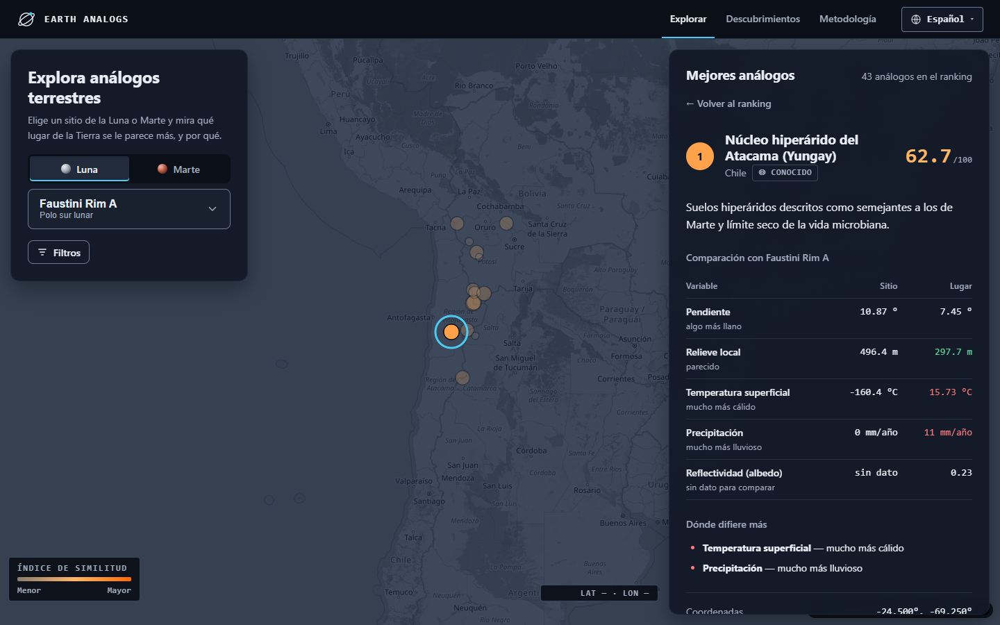

La Tierra, laboratorio de otros mundos.
Una herramienta para comparar lugares terrestres con sitios de exploración de la Luna y Marte, y ver por qué se parecen y dónde no.
¿Qué lugar de la Tierra se parece más a cada sitio?
Elegimos un sitio candidato de base lunar o de aterrizaje en Marte y ordenamos lugares terrestres según su parecido.
Cinco variables con fuente
- Pendiente
- Relieve local
- Temperatura superficial
- Precipitación
- Reflectividad (albedo)
Geología, hielo, cuevas y polvo se comparan aparte, como coincidencias cualitativas.

Una analogía con evidencia
Cada resultado muestra sus valores frente a los del sitio y las variables donde más difiere.
Bolivia ofrece una región de interés para investigar candidatos terrestres.
Cada analogía tiene límites
La Tierra no reproduce la gravedad reducida, el vacío lunar, la atmósfera tenue de Marte ni sus condiciones de radiación.